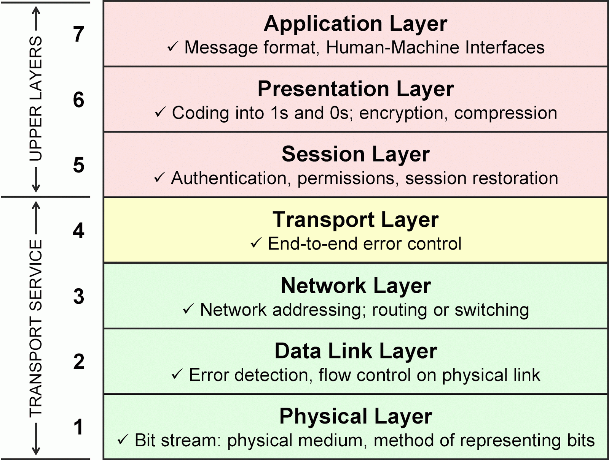
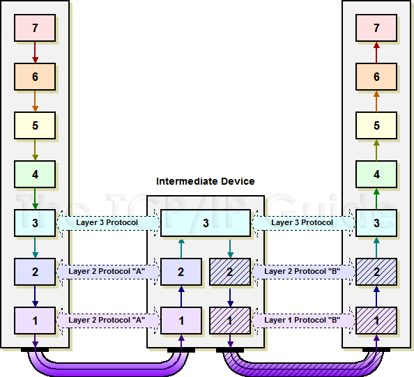
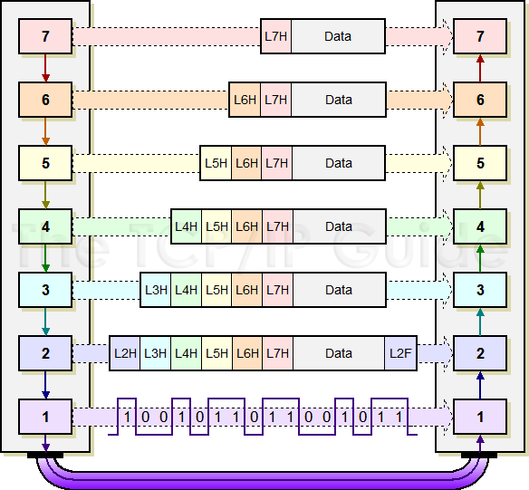
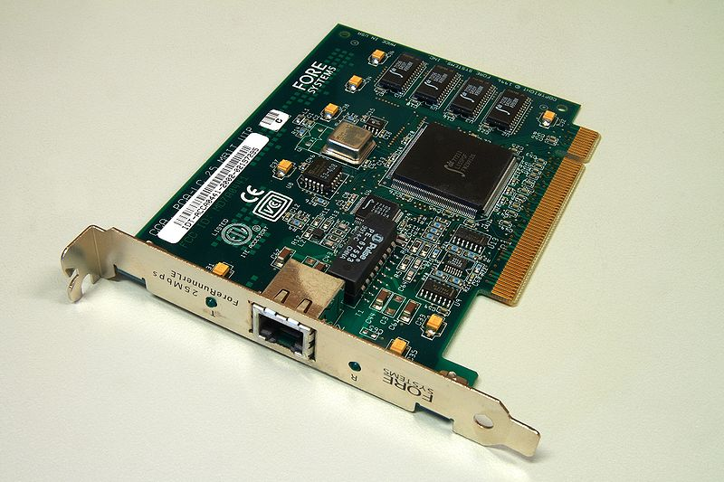

CIS 527
Lab 3 - Networking Overview

Image Source: Wikipedia

Image Source: Wikipedia
7 Layer OSI Model
Image Source: Jordan Head on StackExchange
Data Transmission
Image Source: TCP/IP Guide
Encapsulation
Image Source: Wikipedia
Physical - 1000BASE-T
Image Source: Wikipedia
Data Link - Ethernet
Image Source: Wikipedia
Media Access Control (MAC) Address
- Physical Address of a Network Device
- Identifies Devices at Layer 2
- 48-bit Address
- Example: 1a:2b:3c:d4:e5:f6
- Set by Manufacturer
- Can be Changed by User
Routing
- Find Best Path from Point to Point on Network
- Prevent Loops
- Allow for Redundant Links
- Uses Variant of Spanning Tree Algorithm
Image Source: Wikipedia
Image Source: Wikipedia
Image Source: Wikipedia
Image Source: Wikipedia
Image Source: Wikipedia
Image Source: Wikipedia
Virtual LAN (VLAN)
- Partition a Single Layer 2 Network
- Each Partition is Isolated
- Simplify Network Design
- Group Items by Function, Not Location
Image Source: Cisco
What's Next?
- Layer 3: Network (IP)
- Layer 4: Transport (TCP/UDP)
- Layers 5-7: Application Protocols (HTTP, SNMP, etc.)